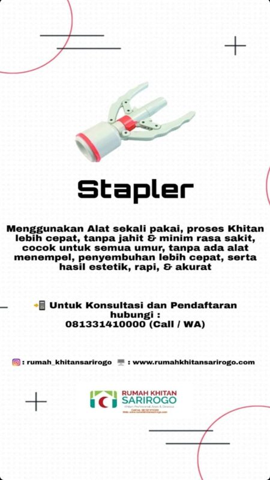
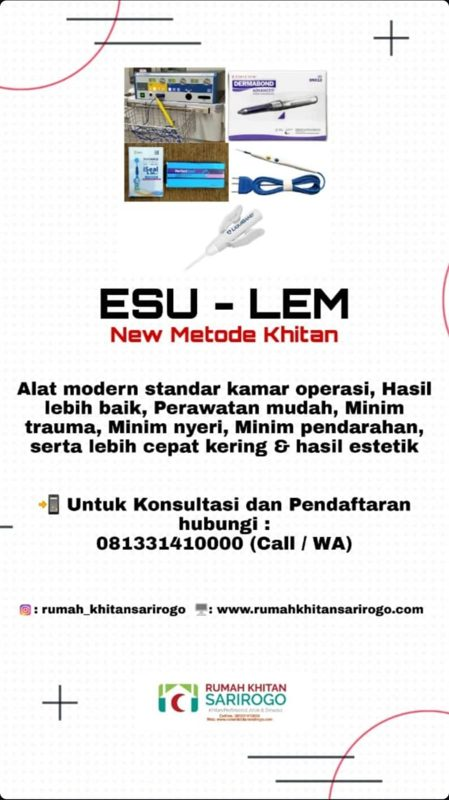
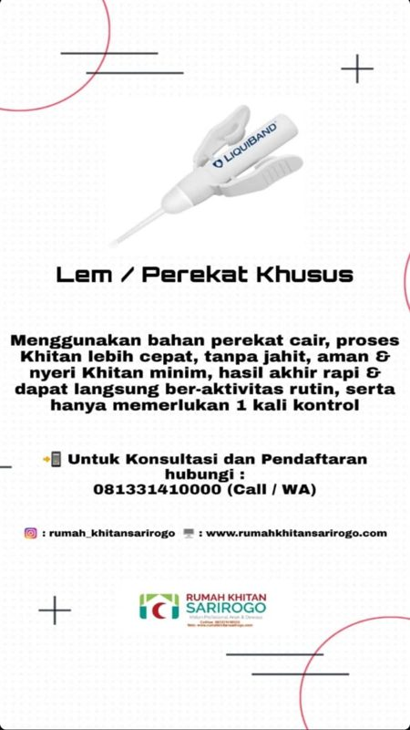
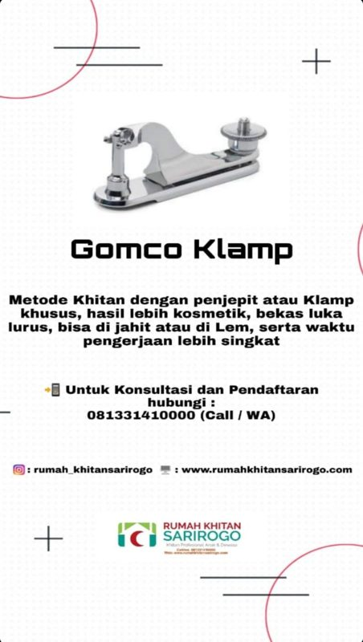
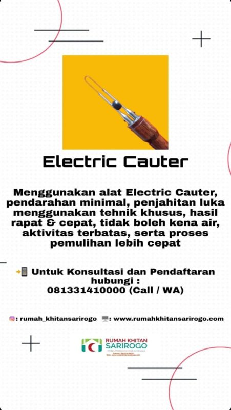
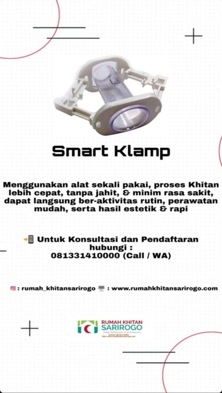
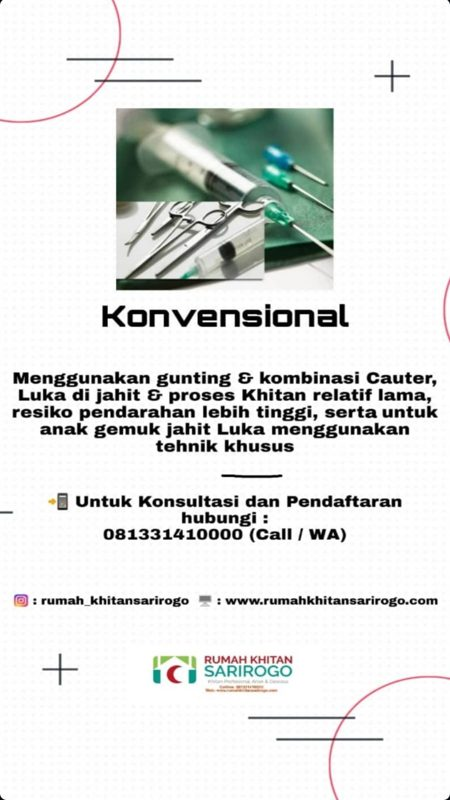

Informasi Layanan Khitan
Setiap layanan dapat ditanyakan langsung kepada tim kami. Harga dan jadwal disampaikan melalui WhatsApp.
Khitan Bayi
Layanan untuk bayi dengan pendampingan orang tua dan penjelasan perawatan yang jelas.
Tanyakan LayananKhitan Dewasa
Layanan untuk remaja dan dewasa dengan konsultasi awal yang menyeluruh.
Tanyakan LayananKhitan Revisi
Konsultasi dan layanan bagi yang memerlukan tindak lanjut khitan sebelumnya.
Tanyakan LayananKhitan Anak Berkebutuhan Khusus
Pendekatan khusus dengan kenyamanan dan waktu anak sebagai prioritas.
Tanyakan LayananKhitan Anak Gemuk
Konsultasi awal untuk menentukan layanan dan metode yang paling sesuai.
Tanyakan LayananInformasi metode khitan
Setiap metode dijelaskan saat konsultasi. Ketersediaannya dikonfirmasi oleh klinik.







Tiga langkah mudah
Hubungi WhatsApp
Sampaikan nama anak, usia, dan layanan yang diinginkan.
Konsultasi
Tim klinik menjelaskan layanan dan metode yang tersedia.
Atur jadwal
Pilih waktu kunjungan yang sesuai dengan keluarga.
Belum yakin layanan yang tepat?
Ceritakan kondisi anak Anda kepada kami melalui WhatsApp, tim kami akan membantu menjelaskan pilihan yang tersedia.